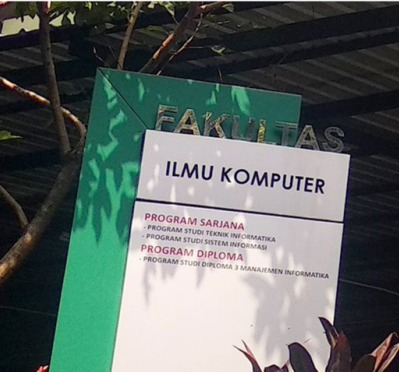

Selamat Datang pada Sistem Peminatan Keahlian Fakultas Ilmu Komputer UPN Veteran Jakarta
Sistem ini untuk sebagai tolak ukur pemahaman diri saya terhadap materi pemrograman web sistem informasi.

ini adalah ujian tengah semester pemrograman web. klik ini untuk ke laman Fakultas Ilmu Komputer UPN Veteran Jakarta ->

Sistem ini untuk sebagai tolak ukur pemahaman diri saya terhadap materi pemrograman web sistem informasi.
| Nama | : Muhammad Satya |
| NIM | : 2210512001 |
| Program Studi | : Sistem Informasi |
"Semoga sistem ini berguna" -satya
Close